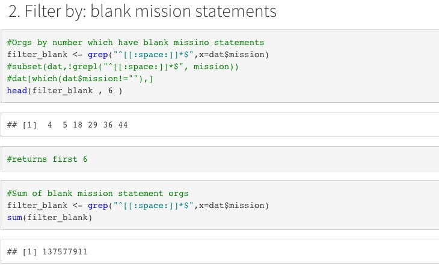

Data Science
A collection of things I am learning & things I’m interested in.
Data Driven Journalism
| Modern Monetary Theory - Slow at first, then all at once. | Ongoing Technical Analysis of Financial Markets |
|---|---|
| Read Here: | Read Here: |
Projects in R
| Predictive Community Change based on Tax Revenue | Dashboard: Interactive Car Accident User Investigation |
|---|---|
| Masters Group Project, ASU | Accident Characteristics in AZ - ShinyAPP |
 |
 |
Technical Statistics Masters Lab Work in R
| Project 01: Timeseries Analysis - Public Transit | Project 02: Grep Analysis of IRS Data |
|---|---|
| Timeseries Analysis - Public Transit | Grep Analysis of IRS Data |
 |
 |
| Project 03: Chi-Squared Test - Gender in Nonprofits | Project 04: Regression Models - Class Sizes on Performance / Exercise and Caffeine |
|---|---|
| Chi-Squared Test - Gender in Nonprofits | Regression Models - Class Sizes on Performance / Exercise and Caffeine |
 |
| Project 05: Omitted Variable Bias - Happiness & Wellbeing | Project 06: Google Viz - A Walkthrough |
|---|---|
| Omitted Variable Bias - Happiness & Wellbeing | Google Viz - A Walkthrough |
 |